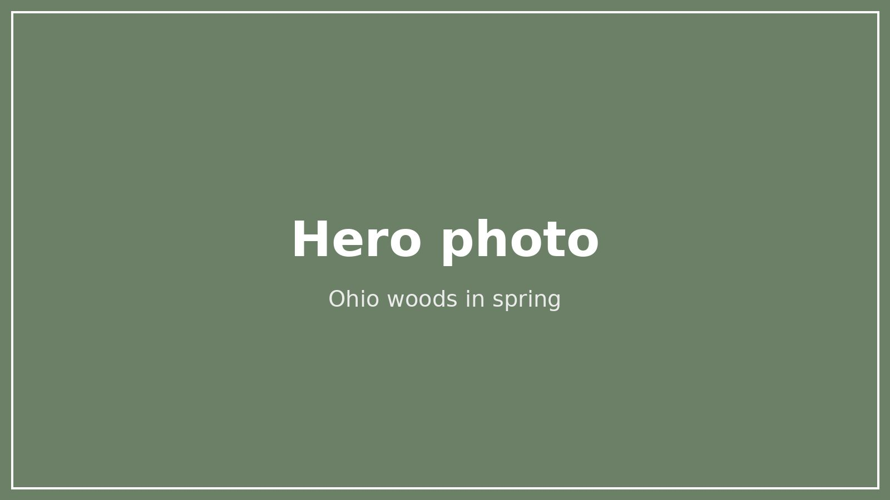

Five Backyard Birds of Ohio
You don't need binoculars or a trip to the country to start birding. These five birds live in yards, parks and campuses all over Ohio, from Lake Erie to the Ohio River, including right here in Cincinnati. Learn to recognize them by sight and, just as important, by sound.
In This Guide
Meet the Birds
- Northern Cardinal: Ohio's state bird. Males are bright red; females are warm tan with red in the wings and tail.
- Carolina Wren: A small, round brown bird with a bold white eyebrow and a surprisingly loud voice.
- American Robin: The orange-breasted bird hopping across lawns, often the first song you hear at dawn.
- Blue Jay: Loud and bold, with blue, white and black feathers. Blue Jays can even imitate hawks.
- Red-winged Blackbird: Males are glossy black with red and yellow shoulder patches. Look for them near ponds and wetlands.